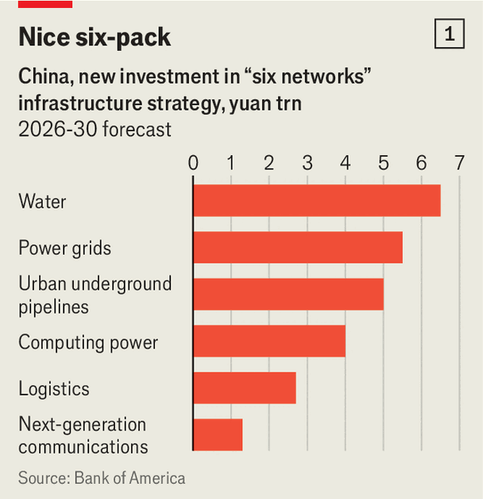
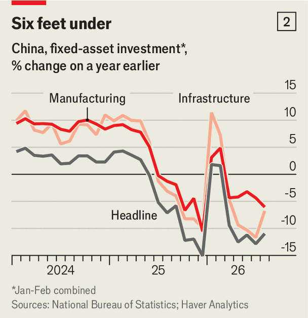

China is giving its economy a big shot in the arm
A massive infrastructure scheme may give the country a sorely needed boost—and help rebalance the world economy
Oct 1st 2026
CHINA IS NO stranger to ambitious public works. The undulating fortifications conceived to protect dynasties from barbarian invasion remain a wonder of the world. “You would have to conclude that this is a great wall,” said President Richard Nixon when he visited in 1972.
To guard against other perils—economic stagnation and deflation—China is putting its faith in new infrastructural marvels. It could spend 25trn yuan ($3.7trn) over the next five years on what the government is calling “the six networks”: water (including reservoirs and canals), electricity (such as smart grids), computing (data centres), communications (fifth- and sixth-generation mobile), logistics and urban pipelines.
The six networks were highlighted in July by the Politburo, the Communist Party’s top decision-making body, which urged planners and bureaucrats to get cracking. On September 29th the central bank announced cheaper financing for six-networks loans. Analysts at Shenwan Hongyuan, a state-owned securities firm, have already picked a portfolio of stocks (six of them, naturally) that could benefit from the government’s investment splurge.
The planned injection of spending, equal to about 3% of China’s cumulative GDP from now until 2030, is a sign of both ambition and unease. It will lay the “hardware foundation for great-power competition”, according to Shenwan Hongyuan. The futuristic economy China’s leaders want to build—all those robots, drones and self-driving cars that Chinamaxxers like to live-stream—requires a lot of water-cooled, cheaply powered computing and communications capacity to sustain it.
The trillions of yuan in spending will also help fill a disquieting gap in domestic demand. And since a lot of that money will be borrowed, the six networks should mop up some excess saving, narrowing China’s trade surplus and contributing to a more balanced world economy.
Many of the six networks are on display on Hengqin island in the Pearl river estuary along China’s southern coast. Once mudflats, mangrove swamps and fishing villages, the island now stands at the cutting edge of urban development. Or so says a chirpy employee of Dahengqin Group, a local state-owned company. She is standing five metres below ground in a brightly lit concrete tunnel that curves far into the distance. “Officials from every part of China have come to see this,” she says, darting a laser pointer over the water pipes, power lines, and fibre-optic cables that neatly line the tunnel’s walls.
Dahengqin Group, which operates the tunnel network, calls it an “Underground Great Wall”. Put another way, it is smart plumbing. During the breakneck expansion of most Chinese cities, utilities sprawled haphazardly. By threading them all through a well-illuminated, easily accessible tunnel, Hengqin solves two problems. It spares the surface world from tangled thickets of cables, and it makes the pipes below easy to repair without digging up roads and disrupting traffic.
Such utility tunnels are not new. Walt Disney built them to hide away all the messy stuff that kept his parks running. His tunnels helped preserve a sense of fairytale magic. Hengqin’s tunnels preserve public safety (broadly defined). They are studded with cameras, fire alarms and sensors that can detect dangerous leaks. Two of the fibre-optic cables carry data for the military police (they are helpfully labelled “Island Surveillance”). The tunnels can also help with channelling floodwaters, a big problem on China’s typhoon-lashed coasts.
China already has 7,700km (4,800 miles) of such tunnels, although not all of them are as pretty as Hengqin’s. It also has a bigger network of more conventional pipes, carrying gas, water, heating or sewage. Over the next five years, it plans to spend 5trn yuan building or renovating 770,000km of this network. If extended into space, this underground Great Wall would reach the moon and back.
The pipes are not even the most expensive item on China’s six-networks shopping list (see chart 1). It plans to spend more on power (5.5trn yuan) and the highest sum on water (6trn yuan). The power projects will help its electricity grid handle the vagaries of solar and wind energy. The goal is to store excess electricity in batteries, move it long distances with ultra-high-voltage power lines and manage it more efficiently with algorithms.

The water spending includes projects to protect southern cities from floods by revitalising “living breakwaters” like the mangroves that Hengqin has restored. It also covers immodest schemes (long under way) to slake the thirst of China’s arid northern cities by diverting water and pumping it uphill from the Yangzi river.
Not content to transfer huge volumes of water from south to north, China also will transfer rivers of data from east to west. Its coastal cities boast high-tech industries that generate and thrive on reams of data. But western China has cheap land and abundant energy that big server farms require. China therefore plans to build six of its ten data-centre clusters in poor, western regions like Ningxia and Gansu.
China’s additions to its computing capacity will cost about 4trn yuan. It will also spend 2.7trn yuan on logistics, improving a network that already moves an average of over 50m tonnes of freight 1km every minute. And at least 1.3trn yuan will be lavished on 5G telecoms base stations, as well as on researching and deploying a sixth generation of mobile telecoms, which will take advantage of low-orbit satellites.
Will these vast sums of money be well spent? In addition to building wonders of the world, China has also built plenty of bridges to nowhere and backwater boondoggles. Its stock of government capital and infrastructure exceeded 84% of GDP as far back as 2013, according to calculations by Richard Herd for the World Bank that do not count power or telecoms networks. That percentage already matched America’s ratio. It has certainly grown since.
Some analysts therefore worry about “redundant construction and homogeneous competition” between copycat projects. How much of the new money will be wasted on networks to nowhere? The Communist Party is not blind to the dangers. Its leader, Xi Jinping, rose to power in the aftermath of the so-called 4trn-yuan stimulus (which actually totalled more like 9.5trn of extra borrowing over 27 months). That spree rescued the economy from the global financial crisis of 2007-09 but also saddled its rivalrous local governments with costly vanity projects and “hidden debt”—liabilities held off-balance-sheet by local-government financing vehicles (LGFVs) set up for the purpose.
In 2017 Mr Xi said that local officials would have to take “lifetime responsibility” for government debts they had incurred. They could be investigated “even years after the fact” for bad investment decisions, points out Wei He of Gavekal Dragonomics, a research firm. The Ministry of Finance boasted of subjecting officials in 12 deeply indebted provinces to “high-pressure supervision” in 2023. Scrutiny could intensify again ahead of a major reshuffling of party leadership next year.
There are other reasons to expect fewer white elephants this time round. Compared with infrastructure splurges of the past, this investment push will entail less cement and more circuits, argues Helen Qiao of Bank of America. Many projects upgrade existing structures—adding sensors to pipes, for example—rather than just building more. They are examples of what economists call intensive growth as opposed to extensive growth.
The spending on water, sewerage and other pipes also addresses a long-standing gap in municipal development—a case of Chinese undercapacity. In the summer months deadly floods threaten even Beijing, the capital. In August thousands of elderly people were moved from care facilities vulnerable to the torrential rain brought by Typhoon Dolphin. “In the past, probably too much attention was paid towards what is built on top of the road, less so for underneath,” says Dr Qiao.
The government thinks the investments add up to more than the sum of their parts. The electricity, water and communication networks will keep computing clusters powered, cooled and fed with data. The clusters, in turn, will train artificial-intelligence models that could help squeeze more power out of the grid. AI could do a better job of forecasting peaks and troughs in consumer demand and anticipating interruptions in supply from wind, solar and hydropower. Well-trained models will also help manage the growing fleets of drones, robots and autonomous vehicles that are supplementing China’s logistics network.
Beneath such long-term visions, more immediate macroeconomic worries are pushing things along. In April the Politburo said that China would start big engineering projects “where conditions are ripe”. The fruit now seems heavy on the vine. On September 28th the State Council, China’s cabinet, said the six-networks implementation plans should start as soon as possible. Government estimates suggest that 7trn of the 25trn yuan could be spent in the first year. China’s policy banks, which make loans in line with national priorities, have already begun extending 800bn yuan of financing.
Why the urgency? The unusual strength of China’s exports, serving foreign customers, masks a worrying lack of demand at home. The rest of the world may be Chinamaxxing, but Chinese consumers are in a more buttoned-up mood. Retail sales grew by only 0.4% in nominal terms in August, compared with a year earlier. The consumer-confidence index is so bad it is a wonder the government still publishes it. The youth-unemployment rate, which was bad enough in 2023 that the government actually did stop publishing it, is once again nearing 19% in China’s cities, even though the new, modified numbers exclude students looking for work.
China’s households used to supplement their limited consumer spending with zealous investment spending on property. But since the housing bubble burst in 2021, more of that saving has flowed into bank deposits, securities and the like. Five years ago households held only 31% of their wealth in financial assets, as opposed to property. Now the share is about 45%, reckons Goldman Sachs, a bank. The financial system is struggling to put this money to work. Bank loans in yuan grew by only 4.9% in August year-on-year. Loans to households (such as mortgages) fell.
China is also now contending with a less familiar gap in demand (see chart 2). Investment in manufacturing and traditional infrastructure has plunged, according to official figures tracking spending on “fixed” assets (that is, excluding things like stockpiled goods). The numbers are so bleak, they have many analysts scratching their heads. China’s government data often arouse suspicion because they paint a flattering picture. These figures, by contrast, seem too bad to be true.

Other sources also look grim, however. The government’s “general” budget, for example, shows a drop in infrastructure spending in the first half of the year. And money is flowing less quickly into another fiscal pot—government-managed funds, which typically collect proceeds from land sales and plough them into construction. Local governments are meanwhile preoccupied with retiring hidden debt, buying vacant land from struggling property developers and clearing a backlog of arrears to suppliers. This “fiscal crunch” is the prime culprit for the infrastructure slowdown, according to Bank of America.
If this weakness in domestic demand persists, China could easily lapse back into deflation. The worry will become acute if demand for the country’s exports falters, either because of further protectionism or a slowdown in America’s AI-investment boom. Imagining a similar shortfall in demand, John Maynard Keynes in 1942 urged the government to build an ample library of public-works projects that could be speeded up if the rest of the economy weakened and slowed down if it proved strong. These blueprints, he said in a radio address, “can be as ambitious and glorious as the minds of our engineers and architects and social planners can conceive”. The six networks are China’s answer to this same challenge. They provide 25trn-yuan-worth of ambitious blue-prints the central government can implement when necessary to support the economy. “Depending on policymakers’ assessment of how much is needed, they are going to turn the dial a little bit faster or slower,” says Dr Qiao.
In his radio address, Keynes also touched on the “nightmare of finance”. How will all these ambitions be paid for? China’s past infrastructure booms have relied on land sales and the hidden debt raised by off-balance-sheet financing vehicles. That model is no longer feasible or politically tolerable for Beijing. In a moribund housing market, land cannot bring in as much money as it once did. And LGFVs offer less financial wriggle room than they did before. Pan Gongsheng, China’s central-bank governor, has claimed that 70% of them had been shut down or converted into commercial ventures with no local-government guarantees.
The six networks will therefore be financed differently. The money will come from the central government, some of its prominent state-owned enterprises and the “special bonds” it approves for local governments. China’s two big grid companies plan to spend a combined 5trn yuan on power networks over the next half-decade. The three big telecoms operators intend to spend about 260bn yuan between them in just 12 months.
China’s policy banks will also play a prominent role. Their loans are supposed to count as first-loss equity capital for the projects they finance. By bearing some of the risk, these stakes should allow the projects to raise more money—even four or five times more—from commercial banks.
Compared with the last infrastructure boom, the financing should be cheaper. China’s excess saving and unusual lack of “investment hunger” means that interest rates are strikingly low. The central government can now borrow for ten years at less than 1.7%—in an economy that is still growing by about 5% in nominal terms. As the rest of the world contends with inflation and surging bond yields, China is still living in the world of “woke macro”, as some economists have called it. In that world governments felt they could spend their way out of trouble and grow their way out of the resulting debt.
With this financial muscle behind it, China’s ambitious six-networks blueprints should put a floor under its economy. By front-loading the spending, China can be sure to meet its growth target of 4.5-5% for this year. How much it adds to China’s growth over a longer horizon depends on the answers to two nettlesome questions: will the six networks increase productivity? And how much would China have spent on infrastructure anyway?
Sceptics will point out that the “six networks” label is newer than some of the schemes it now names. That is often true of China’s grand projects. The same criticism was levelled at the Belt and Road Initiative, a globe-spanning trade-and-investment plan launched in 2013, and the push for “new productive forces” (high-tech productivity improvements) that Mr Xi began championing a decade later. There is more than a cup or two of old wine in the six new bottles China is now showcasing.
Several analysts have compared the 25trn-yuan spending plans to the money spent in similar categories over the past five years. The vast sum it has allocated to water projects over the next five years (6trn yuan), for example, is similar to the amount spent over the past five. But these calculations also suggest that China could invest about 20% more in the power grid, 3% more in communications and perhaps 300% more in computing capacity.
China’s leaders hope that this new spending will usher in a high-tech productivity miracle. The six networks will, they believe, support a similar number of “emerging pillar” industries: integrated circuits, aerospace, biomedicine, new energy storage, robots and the “low-altitude economy” (which includes drones). They are also keen to cultivate half-a-dozen more speculative “industries of the future”, including quantum technology, nuclear fusion, biomanufacturing, green hydrogen, brain-computer interfaces, embodied intelligence, and 6G mobile-telecoms.
Some of these may be flops. A high failure rate is inevitable in frontier industries. The return on upstream infrastructure may thus be disappointingly low. But as Keynes would no doubt point out: the return on unemployment is even worse.
By alleviating a shortfall in domestic demand, China’s infrastructure push could also improve the country’s global standing. The extra spending will, all else equal, narrow China’s trade surpluses, by raising domestic prices and absorbing exportable goods. That would be good for the global economy. And it might help the cause of rules-based international commerce, which has struggled to cope with such a large, lopsided actor. For all its emphasis on telecoms, computing, electricity and so on, China ultimately owes its prosperity to the larger network of international trade. If the 25trn yuan douses some of the protectionist fires now burning around the world, it will be money well spent.
The leaders of some of China’s trading partners will visit Shenzhen in November for the Asia-Pacific Economic Co-operation summit. Perhaps these dignitaries could cross the Pearl river estuary and inspect the Underground Great Wall in Hengqin. If such projects help revive Chinese growth, rebalance the world economy and forestall trade wars, you would have to conclude that these are great pipes.■